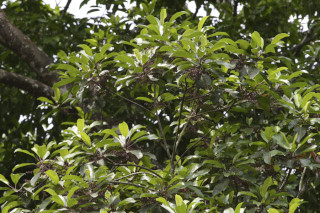
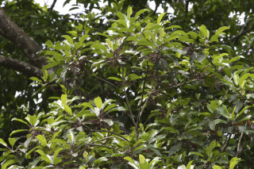
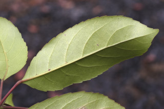
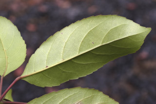
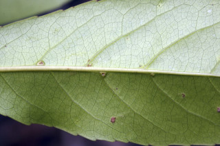
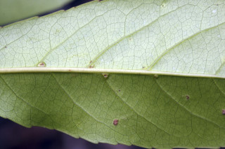
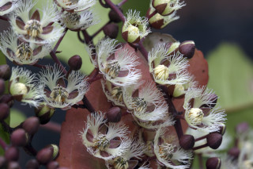
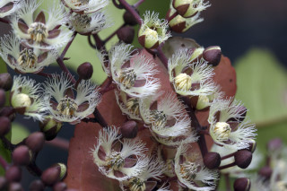
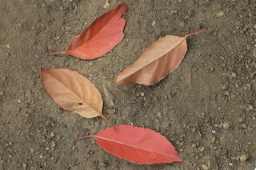
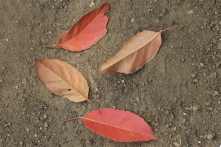

Trees up to 20 m tall.
20 ಮೀ. ಎತ್ತರದವರೆವಿಗೆ ಬೆಳೆಯುವ ಮರಗಳು
20 മീറ്റര് വരെ ഉയരത്തില് വളരുന്ന മരങ്ങള്.
மரம் 20 மீ. உயரம் வரை வளரக்கூடியது
Bark brownish, lenticellate; blaze white to cream.
ತೊಗಟೆ ಕಂದು ಬಣ್ಣಹೊಂದಿದ್ದು ವಾಯುವಿನಿಮಯ ಬೆಂಡು ರಂಧ್ರಗಳ ಸಮೇತವಿರುತ್ತವೆ; ಕಚ್ಚು ಮಾಡಿದ ಜಾಗ ಬಿಳಿಯಿಂದ ಹಿಡಿದು ಕೆನೆಯವರೆಗಿನ ಬಣ್ಣ ಹೊಂದಿರುತ್ತದೆ.
ശ്വസനരന്ധ്രങ്ങളുളള, തവിട്ട് നിറത്തിലുളള പുറംതൊലി; വെട്ട്പാടിന് വെളുപ്പുനിറം മുതല് ക്രീം നിറം വരെ.
மரத்தின் பட்டை அரக்கு நிறமுடையது, லெண்டிசெல்லேட்லேட், பட்டையின் உட்புறம் வெள்ளை நிறம் முதல் கிரீம் நிறமுடையது.
Branches with architecture of “Aubreville_model”; branchlets terete with fallen leaf scars, lenticellate.
ಕವಲುಗಳು “ಆಬ್ರೆವಿಲ್ಲೆ “ ಮಾದರಿಯಲ್ಲಿರುತ್ತವೆ;ಕಿರುಕೊಂಬೆಗಳು ದುಂಡಾಗಿದ್ದು ಎಲೆಉದುರಿದ ಗುರುತು ಸಮೇತವಿದ್ದು. ವಾಯುವಿನಿಮಯ ಬೆಂಡು ರಂಧ್ರಗಳ ಸಹಿತವಿರುತ್ತವೆ.
`ഓബ്രിവില്ല മാതൃകയില്' ക്രമീകരിച്ചിരിക്കുന്ന ശാഖകള്; ശ്വസനരന്ധ്രങ്ങളുളളതും, ഇലകൊഴിഞ്ഞ പാടുകളുളളതുമായ ഉരുണ്ട ഉപശാഖകള്.
கிளைகள் “ஆப்ரவில் மாதிரி” முறையில் கிளைக்கும், சிறிய நுனிக்கிளைகள் குறுக்குவெட்டுத் தோற்றத்தில் வளையமானது மற்றும் இலைகள் விழுந்த தழும்பு காணப்படும், லெண்டிசெல்லேட்லேட்.
Leaves simple, alternate, spiral, clustered at twig ends; petiole 3 cm long, planoconvex in cross section, purple; lamina to 8 × 5 cm, broad elliptic to elliptic-oblong, apex acuminate, base acute, margin serrate, subcoriaceous, glabrous, red when senescent; midrib and nerves purple; secondary_nerves ca. 7 pairs, forked with glabrous domatia at axils beneath; tertiary_nerves reticulo-percurrent.
ಎಲೆಗಳು ಸರಳವಾಗಿದ್ದು,ಪರ್ಯಾಯ ಮತ್ತು ಸುತ್ತು ಜೋಡನಾ ಮಾದರಿಯಲ್ಲಿದ್ದು ಕುಡಿಕೊಂಬೆಗಳ ತುದಿಯಲ್ಲಿ ಗುಂಪಾಗಿರುತ್ತವೆ;ತೊಟ್ಟುಗಳು 3 ಸೆಂ.ಮೀ. ಉದ್ದವಿದ್ದು, ಅಡ್ಡ ಸೀಳಿದಾಗ ಸಪಾಟ ಪೀನ ಮಧ್ಯ ಆಕಾರ ಹೊಂದಿರುತ್ತವೆ ಮತ್ತು ಕೆನ್ನೀಲಿ ಬಣ್ಣ ಹೊಂದಿರುತ್ತವೆ;ಪತ್ರಗಳು 8 X 5 ಸೆಂ. ಮೀ. ಗಾತ್ರ, ಅಂಡವೃತ್ತ- ಚತುರಸ್ರದ ಆಕಾರ, ಕ್ರಮೇಣ ಚೂಪಾಗುವ ಮಾದರಿಯ ತುದಿ, ಚೂಪಾದ ಬುಡ , ಗರಗಸ ದಂತಿತ ಮಾದರಿಯ ಅಂಚು ,ಉಪ-ತೊಗಲನ್ನೋಲುವ ಮೇಲ್ಮೈ ಹೊಂದಿದ್ದು ರೋಮರಹಿತವಾಗಿರುತ್ತವೆ;ಪತ್ರಗಳು ಮುಪ್ಪಾದಾಗ ಕೆಂಪು ಬಣ್ಣ ಹೊದಿರುತ್ತವೆ; ಮಧ್ಯ ನಾಳ ಮತ್ತು ಇತರ ನಾಳಗಳು ಕೆನ್ನೀಲಿ ಬಣ್ಣದಲ್ಲಿರುತ್ತವೆ; ಎರಡನೇ ದರ್ಜೆಯ ನಾಳಗಳು ಅಂದಾಜು 7 ಜೋಡಿಗಳಿದ್ದು ,ಕವಲುಗೊಂಡಿರುತ್ತದೆ ಹಾಗೂ ಪತ್ರದ ತಳಬಾಗದ ಅಕ್ಷಾಕಂಕುಳಿನಲ್ಲಿ ರೋಮರಹಿತವಾದ ಸಹಜೀವಿ ಗೂಡುಗಳ ಸಮೇತವಿರುತ್ತವೆ; ಮೂರನೇ ದರ್ಜೆಯ ನಾಳಗಳು ಜಾಲಬಂಧ ನಾಳ ವಿನ್ಯಾಸದಲ್ಲಿದ್ದು ಎಲೆ ದಿಂಡಿಗೆ ಅಡ್ಡವಾಗಿ ಕೂಡುವಂತಹವು.
ലഘുവായ ഇലകള്, ഏകാന്തരക്രമത്തില്, സര്പ്പിളമായി, തണ്ടുകളുടെ അറ്റത്ത് കൂട്ടമായടുക്കിയ വിധത്തിലാണ്; 3 സെ.മീ നീളമുളള ഊത നിറത്തിലുളള ഇലഞെട്ടിന് ഛേദത്തില്, ഒരുഭാഗംപരന്നും മറുഭാഗം ഉരുണ്ടുമുളള ഘടനയാണ്; പത്രഫലകത്തിന് 8 സെ.മീ നീളവും 5 സെ.മീ വീതിയും, വീതിയേറിയ ദീര്ഘവൃത്താകാരംതൊട്ട് ദീര്ഘവൃത്തീയ-ആയതാകാരം വരെയുമാണ്, പത്രാഗ്രം ദീര്ഘവും പത്രാധാരം നിശിതവുമാണ്, അരികുകള് ദന്തിതമാണ്, ഉപചര്മ്മില പ്രകൃതം, അരോമിലം, ഉണങ്ങാറാകുമ്പോള് ചുവപ്പുനിറമാണ്; മുഖ്യസിരയും ഞരമ്പുകളും ഊതനിറത്തിലാണ്; ഏതാണ്ട് 7 ജോഡി ശാഖിതമായ ദ്വിതീയ ഞരമ്പുകള്, കീഴെ, കക്ഷങ്ങളില് അരോമിലമായ ഡോമേഷ്യയുളളതാണ്; ത്രിതീയ ഞരമ്പുകള് ജാലിത-പെര്കറന്റ് വിധത്തിലാണ്.
இலைகள் தனித்தவை, மாற்றுஅடுக்கமானவை, சுழல் போன்ற அமைப்பு, சிறுகிளைகளின் நுனியில் இலைகள் கூட்டமாக மற்றும் நெருக்கமாக காணப்படும்; இலைக்காம்பு 3 செ.மீ. நீளமானது, குறுக்குவெட்டுத் தோற்றத்தில் பிளேனோகான்வக்ஸ், பர்புள் நிறமுடையது; இலை அலகு 8 X 5 செ.மீ. அகன்ற நீள்வட்டம் முதல் நீள்வட்டம்-நீள்சதுரம் வடிவமுடையது, அலகின் நுனி கூரியது, அலகின் தளம் கூரியது, அலகின் விளிம்பு ரம்ப பற்களுடையது, சப்கோரியேசியஸ், உரோமங்களற்றது, இலைகள் உதிரும் போது சிவப்பு நிறமுடையது; மையநரம்பு மற்றும் நரம்புகள் பர்புள் நிறமுடையது; இரண்டாம் நிலை நரம்புகள் 7 ஜோடிகள், கிளைத்தது மற்றும் உரோமங்களற்ற டொமேஸ்சியா இலைகளின் கீழ்பரப்பில் உள்ள நரம்புகளின் கோணங்களில் காணப்படும்; மூன்றாம் நிலை நரம்புகள் வலைப்பின்னல் பெர்க்கரண்ட்.
Inflorescence axillary racemes, purple, to 15 cm long; pedicel 1 cm long, purple; flowers white with laciniate petals; anthers neither bearded and nor awned.
ಪುಷ್ಪಮಂಜರಿಗಳು ಅಕ್ಷಾ ಕಂಕುಳಿನಲ್ಲಿರುವ ಮಧ್ಯಾಭಿಸರ ಮಾದರಿಯಲ್ಲಿದ್ದು, 15 ಸೆಂ.ಮೀ. ಉದ್ದ ಹೊಂದಿರುತ್ತದೆ;ಹೂ ತೊಟ್ಟುಗಳು 1 ಸೆಂ.ಮೀ. ಉದ್ದ ಹೊಂದಿದ್ದು ಕೆನ್ನೀಲಿ ಬಣ್ಣದಲ್ಲಿರುತ್ತದೆ;ಹೂಗಳು ಬಿಳಿ ಬಣ್ಣ ಹೊಂದಿದ್ದು ಆಳವಾದ ಸೀಳಿಕೆಗಳ ಸಮೇತವಿರುವ ಪು ಷ್ಪದಳಗಳ ಸಮೇತವಿರುತ್ತವೆ ; ಪರಾಗಾಶಯಗಳು ದಾಡಿ ಮತ್ತು ಊಬು ರಹಿತವಾಗಿರುತ್ತವೆ.
പൂങ്കുലകള് 15 സെ.മീ വരെ നീളമുളള, ഊതനിറത്തിലുളള കക്ഷീയ റസീമുകളാണ്; ഊതനിറമുളള പൂഞെട്ടിന് 1 സെ.മീ നീളം; രോമങ്ങളോ മുനപ്പോ ഒന്നുമില്ലാത്ത കേസരങ്ങളും, എറെ വിഭജിതമായ ദളങ്ങളുമുളള പൂക്കള് വെളുത്തതാണ്.
மஞ்சரி இலைக்கோணங்களில் காணப்படும் ரெசீம், பர்புள் 15 செ.மீ. வரை நீளமானது, மலர்காம்பு 1 செ.மீ. நீளமானது, பர்புள் நிறமுடையது; மலர்கள் வெண்மையானது மற்றும் லேசினேட் இதழ்கள்.
Drupe, ellipsoid, 4 × 3 cm, 1-seeded.
ಡ್ರೂಪ್ಗಳು ಚತುರಸ್ರದ ಆಕಾರದಲ್ಲಿದ್ದು 4 X 3 ಸೆಂ ಮೀ.ವರೆಗಿನ ಗಾತ್ರ ಹೊಂದಿದ್ದು ಒಂದು ಬೀಜವನ್ನೊಳಗೊಂಡಿರುತ್ತವೆ.
ഒറ്റവിത്തുളള കായ, 4 സെ.മീ നീളവും 3 സെ.മീ വീതിയുമുളള, ദീര്ഘഗോളാകാര ഡ്രൂപ്പ് ആണ്.
உள்ளோட்டுத்தசைகனி (ட்ரூப்), நீள்வட்டமானது, 4 X 3 செ.மீ. ஒரு விதை கொண்டது.


 

 

 


 

 
